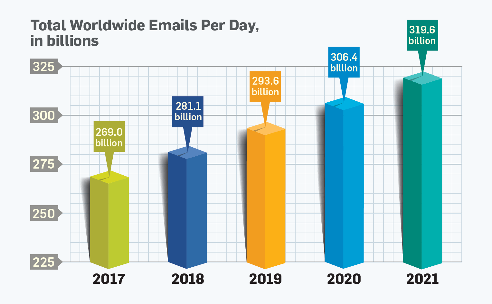

Bad Visualization 1

This visualization is for the readers of technical papers who are
interested in the changing data on email usages
This plot is trying to convey that email traffic is steeply on the
rise
The data being encoded in this visualization is the total worldwide
emails being used per day, in billions, through 2017 to 2021
The data is represented through a barchart. The x-axis represents
years and the y-axis shows the total worldwide emails (billions).
The bars have different colors that illustrate respective years
The reader is tasked with identifying the different number of total
emails for the years shown, recognizing the trend by comparing those
numbers
Although unnecessary, this visualization can be seen as beautiful
with a pleasing combination of colors. However, it fails to apply
the other four principles. The plot unfairly represents the data:
the y-axis does not start at 0 but starts at a very large value of
225 billion instead. In addition, the time range is very narrow and
includes years that need prediction of the future, not using data
that is collected. The form of the barchart also has needless
features such as 3D and the shadows. Thus this visualization does
not have the qualities of being truthful, functional, insightful,
and enlightening
Considering all aspects, this visualization is bad because it can be
misleading to its audience. It not only has unnecessary design
features, but also misrepresents the data. The bar chart shows a
trend with some predictions of the future that could not necessarily
be accurate information, and has incorrect scaling that makes the
chart seem like email traffic has doubled when it only went by a
small fraction in truth.